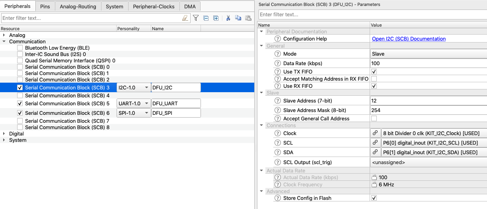
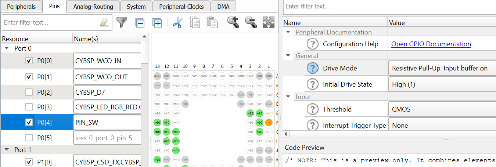
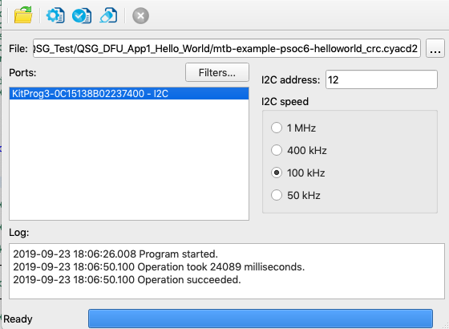
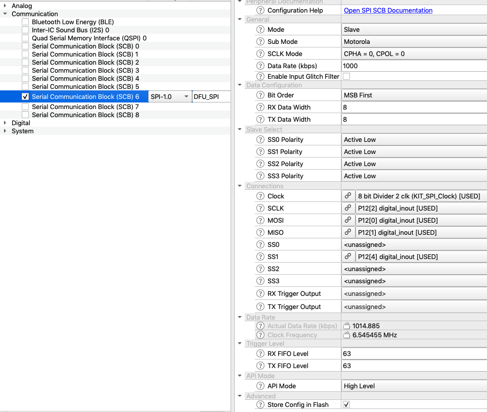
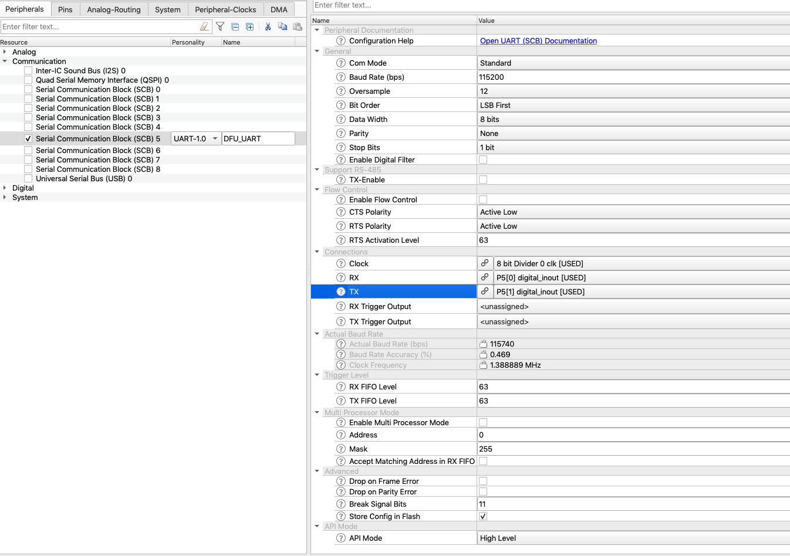
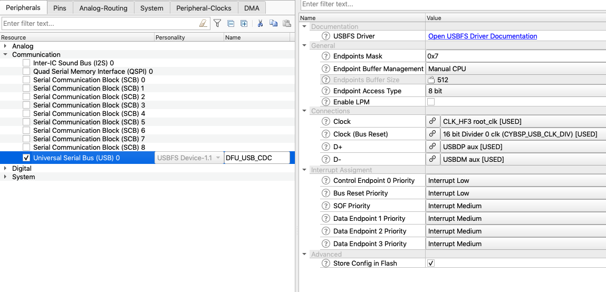

Overview
The purpose of the DFU middleware library is to provide an SDK for updating firmware images. The middleware allows creating two types of projects:
- An application loader receives the program and switch to the new application.
- A loadable application to be transferred and programmed.
A project can contain features of both first and second type.
General Description
Include cy_dfu.h to get access to all functions and other declarations in this library.
The DFU SDK has the following features:
- Read firmware images from a host through a number of transport interfaces, e.g. BLE, USB, UART, I2C, SPI.
- Program a firmware image to the specified address in internal flash, XIP region, or any external memory that supports the DFU API.
- Copy applications.
- Validate applications.
- Safe Update: updates at a temporary location, validates, and if valid, overwrites a working image.
- Switches applications. Passes parameters in RAM when switching applications.
- Supports encrypted image files. Transfers encrypted images without decrypting in the middle.
- Supports many application images, the number of which is limited by the metadata size. Each image can be an application loader. For example, 512-byte metadata supports up to 63 applications.
- Supports customization.
- Supports the CRC-32 checksum to validate data.
Quick Start Guide
The DFU SDK is used to design updating applications of arbitrary flexibility and complexity. Cypress DFU middleware can be used in various software environments. Refer to the Supported Software and Tools. To quick start, use the Code Examples. Cypress Semiconductor continuously extends its portfolio of code examples at Cypress Semiconductor website and Cypress Semiconductor GitHub.
The Quick Start Guide (QSG) assumes ModusToolbox 2.0 is installed with all needed tools.
The following steps are to set up and build a basic DFU loader and loadable applications. The DFU loader application uses I2C transport interface. The steps assume that the user builds an applications for CY8CKIT-062-WIFI-BT based on a starter Hello_World ModusToolbox project.
STEP 0: Projects preparation.
- Create a project for CY8CKIT-062-WIFI-BT with the DFU loader application using the Hello_World starter application. Name it QSG_DFU_App0_I2C. See the ModusToolbox 2.0 IDE Quick Start Guide for the detail steps.
- Create a project for the DFU loadable application in the same way and name it QSG_DFU_App1_Hello_World
- Include the DFU middleware into each project using the ModusToolbox Library Manager or download it from GitHub and copy it to the project manually.
- Include a DFU header in main.c of each project to get access to DFU API:
#include "cycfg.h"
#include "cy_dfu.h"
STEP 1: Setup Loader Application QSG_DFU_App0_I2C
- Copy the configuration files dfu_user.c and dfu_user.h from the libs\dfu\config directory and put them near main.c.
- Copy the transport files from the \config directory and put them near main.c. In our case, I2C requires transport_i2c.h and transport_i2c.c.
- Copy the app0 linker script files from libs\dfu\linker_scripts\TOOLCHAIN_<COMPILER>\ in the project root. For the GCC ARM compiler, copy libs\dfu\linker_scripts\TOOLCHAIN_GCC_ARM\dfu_cm4_app0.ld
- Configure SCB for I2C communication using ModusToolbox Device Configurator. For CY8CKIT-062-WIFI-BT use SCB 3, which is connected to the KitProg.
| SCB parameter name | value |
| Personality | I2C |
| Name | DFU_I2C |
| Mode | Slave |
| Data Rate (kbps) | 100 |
| Slave Address (7-bit) | 12 |
- Warning
- SCB personality must be I2C and name must be DFU_I2C.

See Use of ModusToolbox's tools for HW initialization
STEP 2: Update Loader QSG_DFU_App0_I2C main.c
- Include a DFU reset handler to start the appropriate application after a reset:
void Cy_OnResetUser(void)
{
}
- Initialize the variables and call the DFU initialization function:
uint32_t count = 0;
uint32_t state;
const uint32_t paramsTimeout = 20u;
CY_ALIGN(4) static uint8_t buffer[CY_DFU_SIZEOF_DATA_BUFFER];
CY_ALIGN(4) static uint8_t packet[CY_DFU_SIZEOF_CMD_BUFFER ];
dfuParams.timeout = paramsTimeout;
dfuParams.dataBuffer = &buffer[0];
dfuParams.packetBuffer = &packet[0];
init_cycfg_all();
__enable_irq();
- Initialize the DFU transport layer:
- Update the main loop with the Host Command/Response protocol processing:
++count;
{
{
}
{
}
}
{
}
{
uint32_t passed5seconds = (count >= (5000ul/paramsTimeout)) ? 1u : 0u;
{
count = 0u;
}
{
if (passed5seconds != 0u)
{
count = 0u;
}
}
else
{
count = 0u;
Cy_SysLib_Delay(paramsTimeout);
}
}
Update the main loop with a routine to switch to the loaded QSG_DFU_App1_Hello_World application.
For example, to switch by pressing the CY8CKIT-062-WIFI-BT button SW2:
- Enable pin 0[4] in Device Configurator with name PIN_SW2
- Set/check pin configuration:
| Parameter name | value |
| Driver Mode | Resistive Pull-Up. Input buffer on |
| Initial Drive State | High(1) |

- Add the following routine:
if (Cy_GPIO_Read(PIN_SW2_PORT, PIN_SW2_PIN) == 0u)
{
Cy_SysLib_Delay(50u);
if (Cy_GPIO_Read(PIN_SW2_PORT, PIN_SW2_PIN) == 0u)
{
while (Cy_GPIO_Read(PIN_SW2_PORT, PIN_SW2_PIN) == 0u)
{
Cy_SysLib_Delay(50u);
}
{
}
}
}
STEP 3: Build and Program Loader QSG_DFU_App0_I2C
- Update the project Makefile to use the DFU linker script for the appropriate toolchain dfu_cm4_app0.*. Set LINKER_SCRIPT to the linker script copied to the project root.
LINKER_SCRIPT=dfu_cm4_app0.ld
- Add a post-build step to sign the ELF file or sign it manually after the build: <MCUELFTOOL> –sign <app>.elf –output <app_signed>.elf –hex <app_signed>.hex.
For macOS/Linux platform: POSTBUILD=$(CY_MCUELFTOOL_DIR)/bin/cymcuelftool --sign $(CY_CONFIG_DIR)/$(APPNAME).elf --hex $(CY_CONFIG_DIR)/$(APPNAME).hex
POSTBUILD="$(CY_MCUELFTOOL_DIR)/bin/cymcuelftool.exe" --sign $(CY_CONFIG_DIR)/$(APPNAME).elf --hex $(CY_CONFIG_DIR)/$(APPNAME).hex
- Connect DVK CY8CKIT-062-WIFI-BT. Build and program the device.
- Observe the device red LED blinking.
STEP 4: Setup Loadable QSG_DFU_App1_Hello_World
- Copy the configuration file dfu_user.h from the libs\dfu\config directory and put them near main.c in the project root.
- Warning
- Do not copy dfu_user.c to avoid duplication of the metadata structures
- Copy the app1 linker script files from \libs\dfu\linker_scripts\TOOLCHAIN_<COMPILER>\ in the project root. For GCC ARM compiler copy \libs\dfu\linker_scripts\TOOLCHAIN_GCC_ARM\dfu_cm4_app1.ld
STEP 5: Update Loadable QSG_DFU_App1_Hello_World main.c
- Update the main.c file with the .cy_app_signature section
CY_SECTION(".cy_app_signature") __USED static const uint32_t cy_dfu_appSignature[1];
- Initialize the peripheral in the main function:
- Change the behavior of the basic application. For example, change the Blinky LED to green or change the UART output.
Update the main loop with a routine to switch to the loader QSG_DFU_App0_I2C application to load another application.
For example, to switch by pressing the CY8CKIT-062-WIFI-BT button SW2:
- Enable pin 0[4] in Device Configurator with name PIN_SW2
- Set/check pin configuration:
| Parameter name | value |
| Driver Mode | Resistive Pull-Up. Input buffer on |
| Initial Drive State | High(1) |
- Add the following routine:
if (Cy_GPIO_Read(PIN_SW2_PORT, PIN_SW2_PIN) == 0u)
{
Cy_SysLib_Delay(50u);
if (Cy_GPIO_Read(PIN_SW2_PORT, PIN_SW2_PIN) == 0u)
{
while (Cy_GPIO_Read(PIN_SW2_PORT, PIN_SW2_PIN) == 0u)
{
Cy_SysLib_Delay(50u);
}
}
}
STEP 6: Build and Program Patch
- Update the project Makefile to use the DFU linker script for the appropriate toolchain dfu_cm4_app1.*. Set the LINKER_SCRIPT variable with the path to the copied linker script.
LINKER_SCRIPT=dfu_cm4_app1.ld
Add the post build step to run CyMCUElfTool to generate a patch file in the *.cyacd2 format (see CyMCUElfTool User Guide):
- Update the application ELF with a CRC checksum: <MCUELFTOOL> –sign app.elf CRC –output app_crc.elf
- Generate a patch file: <MCUELFTOOL> -P app_crc.elf –output app.cyacd2
Generate a *.cyacd2 file in the project root.
For macOS/Linux platform:
POSTBUILD=$(CY_MCUELFTOOL_DIR)/bin/cymcuelftool --sign $(CY_CONFIG_DIR)/$(APPNAME).elf CRC --output $(APPNAME)_crc.elf && \
$(CY_MCUELFTOOL_DIR)/bin/cymcuelftool -P $(APPNAME)_crc.elf --output $(APPNAME)_crc.cyacd2
For Windows platform:
POSTBUILD="$(CY_MCUELFTOOL_DIR)/bin/cymcuelftool.exe" --sign $(CY_CONFIG_DIR)/$(APPNAME).elf CRC --output $(APPNAME)_crc.elf && \
"$(CY_MCUELFTOOL_DIR)/bin/cymcuelftool.exe" -P $(APPNAME)_crc.elf --output $(APPNAME)_crc.cyacd2
- Build a project.
- Open the DFU Host Tool. Connect to the device. Select the generated .cyacd2 in the project root and program it to the device.

- QSG_DFU_App1_Hello_World application should start after successful program. Observe the kit change behavior based on changes STEP 5: Update Loadable QSG_DFU_App1_Hello_World main.c (green LED blinking, UART output). Also, switching to the QSG_DFU_App1_Hello_World application could be done manually by pressing PIN_SW2 (pin 0[4]).
- Switch back to the loader QSG_DFU_App0_I2C application. Press the kit button PIN_SW2 (pin 0[4]) and observe that the kit red LED blinking.
Configuration Considerations
Linker scripts
The DFU SDK projects linker scripts are a bit different from the default startup linker scripts.
The DFU linker scripts are:
- dfu_cm4_app0.{ld, icf, scat}, dfu_cm4_app1.{ld, icf, scat} for ARM GCC, IAR, and ARM compilers.
dfu_common.h and dfu_elf_symbols.c for the ARM compiler.
These files define symbols for the memory layout for each application inside the device.
- Memory layout of linker scripts (dfu_cm4_{app0, app1}.ld)
This part of the GCC linker script files must have the same memory layout across all the application projects in the designed device. Any changes made to any application must be copied to other applications dfu_cm4_{app0, app1}.ld files.
Memory regions:
- flash_cm0p - code and data of the default application CM0+ CPU.
- flash_app{X} - code and data of the user application {X}.
- flash_boot_meta - for the DFU SDK metadata. Cypress DFU SDK code examples place DFU SDK metadata inside this region.
- sflash_user_data, eFuse, flash_toc, em_eeprom, xip - These regions not used by typical DFU SDK code examples. They are kept because they may be used in user code.
- ram_common - shared between DFU SDK applications. The user may place it anywhere inside the RAM, So, one app sets some values there, switches to another app. Then app may read or update the values.
- ram_app{X} - data, stack, heap etc. for the user app{X}.
ELF file symbols: CyMCUElfTool uses special ELF file symbols besides command-line arguments for its configuration. These symbols are defined in each linker script.
__cy_memory_{N}_start - Defines the start address of the memory region. __cy_memory_{N}_length - Defines the length of the memory region. __cy_memory_{N}_row_size - Defines the row size of the memory region.
CyMCUElfTool uses these symbols to determine which memory regions should be placed into the output files. I.e. without these symbols, some data like XIP may be absent in the output file. These symbols are critical for .cyacd2 file generation, CyMCUElfTool must know the row size of all the data being exported to the .cyacd2 file. The updating is done by rows, and a row size may vary across the memory regions.
E.g. Internal flash of PSoC6 devices start at address 0x1000_0000 and the length and row size may de device-dependent, but let's assume it is 512KB and 512 bytes. The memory symbols for the internal flash will be: __cy_memory_0_start = 0x10000000; __cy_memory_0_length = 512 * 1024; __cy_memory_0_row_size = 512;
The number _{N}_ in the memory symbol indicates that there may be multiple memories.
- __cy_boot_metadata_addr and __cy_boot_metadata_length. These symbols are used by the DFU SDK internally to access the metadata.
__cy_product_id - used by CyMCUElfTool to be placed in the .cyacd2 header. This value is used by the updating Host and DFU SDK firmware to confirm that the .cyacd2 file being updated is compatible with the device.
E.g. The user may have two different devices with the same PSoC6 chip:
- A coffee machine, with Product ID - 0x1000_0001.
- A nuclear power plant control device with Product ID - 0x1000_0002. The user of a coffee machine tries to update firmware for a nuclear power plant control device, and the DFU Host will indicate that the device rejected this firmware because of the wrong Product ID.
__cy_app{N}_verify_start, __cy_app{N}_verify_length. These symbols are used by the dfu_user.c file to initialize the metadata. Their value is automatically updated by the linker when the user updates the memory layout (memory regions).
If the user decided to use a different mechanism for SDK metadata initialization, then these symbols can be removed.
- __cy_boot_signature_size. Used by the DFU SDK linker scripts only. It helps avoiding the magic number for a signature size to be scattered throughout all the linker scripts. E.g.
- For the CRC-32C application signature, the value of this symbol is 4 (bytes).
- For RSASSA-PCKS-1-v1.5 with RSA 2048, the value is 256 (bytes).
- __cy_checksum_type. The checksum type for the DFU transport packet verification used by CyMCUElfTool to generate a updating file. Must be aligned with CY_DFU_OPT_PACKET_CRC
- File dfu_cm4_app0.ld
This file is a linker script for the app0 for DFU SDK applications.
It is similar to the default startup GCC's CM4_dual linker script but with some differences:
- Memory regions are separated between the CM0+ CPU and CM4 CPU application 0 and CM4 CPU application 1 described above.
- DFU-specific ELF file symbols described above.
- __cy_app_id. These ELF file symbols are used by CyMCUElfTool to set an application ID in the .cyacd2 file header.
- __cy_app_verify_start, __cy_app_verify_length. These two symbols are used by CyMCUElfTool to generate an application signature. The first symbol provides a value of the start of signed memory and the second - the length of signed memory.
- Section ".cy_boot_noinit". Used to place data to share between the applications. See the description of the ram_common memory region.
- Section ".cy_boot_metadata". Contains the DFU SDK metadata. This section name is necessary only for CyMCUElfTool to sign the section with the CRC-32C checksum of this section data. If no CRC-32C at the end of the metadata is required, then the section can be renamed.
- Section .cy_app_signature. This section is used to place an application signature. The signature is used by the DFU SDK to verify that the application is valid. Typically, CRC, SHA or any other hash of the application code and data is placed here. CyMCUElfTool updates this section in the post-build step. The memory for which the signature is calculated is defined by the following ELF file symbols: __cy_app_verify_start, __cy_app_verify_length.
- File dfu_cm4_app1.ld
Used to create linker scripts for application #2, .. #N It is similar to dfu_cm4_app0.ld linker script with some differences:
- Region alias for flash and ram are flash_app1 and ram_app1
- Application ID __cy_app_id = 1
- Removed section for CM0+ CPU as it is allocated only once in scope of linker script dfu_cm4_app1.ld
- Files dfu_cm4_{app0, app1}.{icf, scat}
These files are the linker scripts for the IAR and ARM compilers for the DFU SDK applications.
Their difference from the default startup linker scripts are similar to the DFU SDK GCC's linker scripts described above.
Use of ModusToolbox's tools for HW initialization
For a setup of the SCB I2C personality in ModusToolbox Device Configurator for the I2C DFU transport for CY8CKIT-062-WIFI-BT, see the screenshot below. For other kits, verify the I2C pins and SCB block selection.
- Note
- The personality alias name must be DFU_I2C
For a setup of the SCB SPI personality in ModusToolbox Device Configurator for the SPI DFU transport for CY8CKIT-062-WIFI-BT, see the screenshot below. For other kits, verify the SPI pins and SCB block selection.
- Note
- The personality alias name must be DFU_SPI

For setup SCB UART personality in ModusToolbox Device Configurator for UART DFU transport for CY8CKIT-062-WIFI-BT see screenshot below. For other kit please verify UART pins and SCB block selection.
- Note
- Personality alias name must be DFU_UART

For a setup of the USB device personality in ModusToolbox Device Configurator for the USB CDC DFU transport for CY8CKIT-062-WIFI-BT, see the screenshot below. For other kits, verify the USB pins.
- Note
- The personality alias name must be DFU_USB_CDC

For a setup of the BLE device personality in ModusToolbox Device Configurator for the BLE DFU transport, see the screenshot below.
Design Considerations
Firmware Update via UART
See Quick Start Guide for steps how to set up a DFU project that upgrades an application via a UART transport interface.
Firmware Update via I2C
See Quick Start Guide for basic steps how to setup a DFU project. Specific steps for the I2C transport support:
- Include transport_i2c.c and transport_i2c.h in the project build flow. For example, copy from the \config directory to the directory with the main.c file. Ensure that other transport files are not included in the build flow.
- Select and configure the SCB block using ModusToolbox Device Configurator see Use of ModusToolbox's tools for HW initialization or manually using the configuration structures.
- Add the post-build step to sign the ELF file or sign it manually after the build
<MCUELFTOOL> --sign app.elf --output app_signed.elf
- Build and program a project into the device.
- Open DFU Host Tool. Select the I2C interface. Set ab I2C address and speed according to the SCB I2C setup in the previous step.
- Select the *.cyacd2 application image and upload to the device
Firmware Update via SPI
See Quick Start Guide for basic steps how to set up a DFU project. Specific steps for the SPI transport support:
- Include transport_spi.c and transport_spi.h in the project build flow. For example, copy them from the \config directory to the directory with main.c file. Ensure that other transport files are not included in the build flow.
- Select and configure the SCB block. This could be done using ModusToolbox Device Configurator see Use of ModusToolbox's tools for HW initialization or manually using the configuration structures.
- Add the post-build step to sign the ELF file or sign it manually after the build
<MCUELFTOOL> --sign app.elf --output app_signed.elf
- Build and program a project into the device.
- Open DFU Host Tool. Select the SPI interface. Set SPI mode, shift the direction and speed according to the SCB SPI setup in the previous step.
- Select *.cyacd2 application image and upload to the device
Firmware Update via USB CDC
See Quick Start Guide for basic steps how to setup a DFU project. Specific steps for the USB CDC transport support:
- Include transport_usb_cdc.c and transport_usb_cdc.h in the project build flow. For example, copy them from the \config directory to the directory with the main.c file. Ensure that other transport files are not included in the build flow.
- Enable and configure the USB Device block using ModusToolbox Device Configurator see Use of ModusToolbox's tools for HW initialization or manually using the configuration structures.
- Generate USB descriptors and USB Middleware structures using USB Configurator. Open the USB configuration file (cycfg_usb_cdc.cyusbdev) in the DFU \config folder, then click Save to generate configuration files (cycfg_usbdev.c and cycfg_usbdev.h). These files must be included in the build flow (see USB Middleware API Reference More Information).
- Add the post-build step to sign the ELF file or sign it manually after the build
<MCUELFTOOL> --sign app.elf --output app_signed.elf
- Build and program a project into the device. Connect your Host to the USB device
- Open DFU Host Tool. Select the UART interface, because Host recognizes a USB device as a virtual UART (the name should be DFU USB CDC transport). UART settings: baud rate - 115200, data bits - 8, stop bits - 1, parity - None.
- Select the *.cyacd2 application image and upload to the device.
Firmware Update via BLE (Over-the-Air)
See Quick Start Guide for basic steps how to set up a DFU project. Also, see code example CE216767 Specific steps for the USB BLE transport support:
- Include transport_ble.c and transport_ble.h in the project build flow. For example, copy them from the \config directory to the directory with the main.c file. Ensure that other transport files are not included in the build flow.
- Enable and configure the BLE Device block using ModusToolbox Device Configurator see Use of ModusToolbox's tools for HW initialization or manually using the configuration structures.
- Generate BLE Middleware configuration structures. Open the BLE configuration file (cycfg_ble.cybt) in Bluetooth Configurator. The file is located in the DFU \config folder. Then click Save to generate configuration files (cycfg_ble.c and cycfg_ble.h). These files must be included in the build flow (BLE Middleware API Reference More Information).
- Add the post build step to sign the ELF file or sign it manually after the build
<MCUELFTOOL> --sign app.elf --output app_signed.elf
- Build and program the project into the device.
- Open CySmart. There are two versions: for Windows PC platforms and mobile application see More Information). Scan for devices and select your BLE device in the list (should be OTA DFU).
- Click Update Firmware -> Application only update. Select the *.cyacd2 application image and upload to the device
Change checksum types
DFU supports two types of checksums:
- transport packet checksum
- application image checksum.
For a packet, DFU supports 2 types of checksums: Basic summation and CRC-16CCITT. The basic summation checksum is computed by adding all the bytes (excluding the checksum) and then taking the 2’s complement. CRC-16CCITT ‒ the 16-bit CRC using the CCITT algorithm. The packet checksum type is selected with a macro CY_DFU_OPT_PACKET_CRC in dfu_user.h file: 0 - basic summation (default), 1 - for CRC-16.
For an application image, DFU supports 2 types of checksums: CRC-32 and SHA1. SHA1 is calculated with a crypto hardware block. The default application checksum is CRC-32. Steps to set a SHA1 checksum for an application image:
- Set CY_DFU_OPT_CRYPTO_HW macro to 1 in dfu_user.h file to enable the SHA1 calculation.
- Symbol __cy_checksum_type = 0x01 in Linker scripts for each application for ARM GCC and IAR compiler. Set macro CY_CHECKSUM_TYPE to 1 in dfu_common.h for the ARM compiler.
- Symbol __cy_boot_signature_size = 20 in Linker scripts for each application for the ARM GCC and IAR compilers. Set macro CY_BOOT_SIGNATURE_SIZE to 20 in dfu_common.h for the ARM compiler.
- Configure and start crypto a server and crypto client (see PDL API Reference in More Information) in the loader application main routine.
- Allocate the ".cy_app_signature" section with a 20-byte array in the main of the loading application.
Multi-application DFU project
DFU design does not limit the number of applications. The number of applications is limited by memory size and metadata size. The maximum size of DFU metadata is limited to the size of the flash row, because metadata should be in a single flash row. For example, 512-byte metadata supports up to 63 applications. An arbitrary number of applications can be protected from overwriting. Such a protected application is called "Golden Image". Quick Start Guide For a setup of basic 2 application DFU projects. The following steps show how to set up a 3rd application. The same approach can be used to setup 4th - Nth applications.
- Define the sizes for each of the 3 applications and define the start and size of each memory region (flash, RAM) for each application.
- Copy the linker script dfu_cm4_app1 from DFU linker_scripts folder according to the selected compiler and rename it (for example dfu_cm4_app2).
- Add flash and RAM sections to the 3rd application. Name them flash_app2, ram_app2.
- Update the size and start address for each section in each linker script based on the defined in the first step allocation.
- Set __cy_app_id symbol to 2
- Update the region aliases for flash and ram to use flash_app2 and ram_app2 accordingly:
REGION_ALIAS("flash", flash_app2);
REGION_ALIAS("ram", ram_app2);
- Add symbols __cy_app2_verify_start and __cy_app2_verify_length for metadata initialization in the same way as for application 0 and 1.
- Add macro in the dfu_user.h CY_DFU_APP2_VERIFY_START and CY_DFU_APP2_VERIFY_LENGTH in the same way as for application 0 and 1
- Add to the cy_dfu_metadata array of the dfu_user.c CY_DFU_APP2_VERIFY_START and CY_DFU_APP2_VERIFY_LENGTH to update metadata with 3rd application.
- Update you build scripts to use the dfu_cm4_app2 linker script.
Protect the application image by setting parameters in the dfu_user.h file of the loader project: CY_DFU_OPT_GOLDEN_IMAGE set to 1 to enable the Golden Image functionality. CY_DFU_GOLDEN_IMAGE_IDS lists the number of images that to be protected.
Creation of the CYACD2 file
The .cyacd2 file contains downloadable application data created by CyMCUElfTool and used by host programs such as Cypress’ DFU Host Program and CySmart to send applications to the target DFU module (see More Information). Refer to the AN213924 DFU SDK User Guide for the .cyacd2 file format. See the Loadable Application Setup section of the Quick Start Guide for the steps to convert a general application into a DFU loadable application.
Steps to create a .cyacd2 file with a CRC application signature:
- Copy the path to the CyMCUElfTool binary. The path can be found in the folder with ModusToolbox tools (for example /ModusToolbox/tools_2.0/cymcuelftool-1.0/bin/cymcuelftool).
- Update the application ELF with a CRC checksum (<MCUELFTOOL> - the copied path to the binary):
<MCUELFTOOL> --sign app.elf CRC --output app_crc.elf
- Generate a .cyacd2 file:
<MCUELFTOOL> -P app_crc.elf --output app.cyacd2
These commands can be added as post build steps to the build Makefile.
For the SHA1 application signature, use command (Change checksum types):
<MCUELFTOOL> --sign app.elf SHA1 --output app_crc.elf
Supported Software and Tools
This version of the DFU Middleware was validated for the compatibility with the following Software and Tools:
| Software and Tools | Version |
| ModusToolbox Software Environment | 2.0 |
| - ModusToolbox Device Configurator | 2.0 |
| - Device Firmware Update Host Tool | 1.1 |
| - CyMCUElfTool | 1.0 |
| GCC Compiler | 7.2.1 |
| IAR Compiler | 8.32 |
| ARM Compiler 6 | 6.11 |
MISRA-C Compliance
| MISRA Rule | Rule Class (Required/Advisory) | Rule Description | Description of Deviation(s) |
| 1.1 | R | This rule states that code shall conform to C ISO/IEC 9899:1990 standard. | DFU middleware supports the ISO:C99 standard. |
| 2.3 | A | Nested comments are not recognized in the ISO standard. | The comments provide the useful WEB link to the additional documentation. |
| 3.1 | R | All usage of implementation defined behavior shall be documented | The DFU SDK deviates rule 11.3 which triggers rule 3.1. The ANSI symbols Dollar and Back quote are used by PDL headers before being preprocessed. |
| 5.6 | A | To avoid confusion, no identifier in one name space should have the same spelling as an identifier in another name space, with the exception of structure and union member names | This rule is deviated because the generalized implementation approach requires having the same names. |
| 8.7 | R | Objects shall be defined at block scope if they are only accessed from within a single function. That is, minimize the scope of objects and variables | For some communication APIs, an object scope can be reduced, but that is not because of the generalized implementation approach. |
| 9.2 | R | Braces shall be used to indicate and match the structure in the nonzero initialization of arrays and structures | This rule is deviated in the dfu_user.c file, it is manually checked to be valid. |
| 11.3 | A | Avoid casts between a pointer type and an integral type | There are a few casts between the pointer and uint32_t type in the cy_dfu.c file. All of them are manually verified and reviewed to be safe. |
| 11.4 | A | A cast should not be performed between a pointer to object type and a different pointer to object type. | Casts involving pointers are conducted with caution that the pointers are correctly aligned for the type of the object being pointed to. |
| 11.5 | R | Not performed, the cast that removes any const or volatile qualification from the type addressed by a pointer. | The removal of the volatile qualification inside the function has no side effects. |
| 13.7 | R | Boolean operations whose results are invariant shall not be permitted. | MISRA-C:2004 is not smart enough to understand the function is weak, thus may return values other than in the default implementation. |
| 14.1 | R | There shall be no unreachable code. This refers to code which cannot, under any circumstances, be reached. | MISRA-C:2004 does not understand that a weak function is supposed to be overwritten in the customer project. Thus assumes the function returns always the same fixed value, so any if() branch testing weak-function return-value may be treated as unreachable code. |
| 14.2 | R | All non-null statements shall either have at least one side-effect, however executed, or cause control flow to change. | MISRA-C:2004 is not smart enough to understand the intention of the (void)unused_param; statement.
GCC, ARM and IAR compilers understand the intention of this. |
| 16.7 | A | The object addressed by the pointer parameter is not modified and so the pointer could be of type 'pointer to const'. | Some DFU SDK functions are weak, and can be redefined in the user code. They contain non-const pointer parameters intentionally to be more generic . |
| 17.4 | R | Array indexing shall be the only allowed form of pointer arithmetic | There are several instances of the pointer arithmetic in cy_dfu.c. They cannot be avoided, so are manually checked and reviewed to be safe. |
| 19.7 | A | A function shall be used in preference to a function-like macro | Function-like macros are used for performance reasons. |
| 19.13 | A | Avoid use of the # and ## preprocessor directives when possible | The directive ## of the preprocessor used in the transport_uart/i2c/spi/usb_cdc.c. The use of ## is intentional and allows setting the UART/I2C/SPI/USBFS component name in one place and does not change it throughout the whole transport_uart/i2c/spi/ usb_ucd.c file. |
| 21.1 | R | Minimization of run-time failures shall be ensured by the use of at least one of:
- static analysis tools/techniques;
- dynamic analysis tools/techniques;
- explicit coding of checks to handle run-time faults.
| Redundant operations are present because of the generalized implementation approach. |
Errata
No know issues.
Changelog
| Version | Changes | Reason for Change |
| 4.0 | Updated the linker scripts to use the single pre-compiled CM0p image. The upgradeable part of the image is the CM4 application. | Support ModusToolbox v2.0 build flow. |
| Added the ARM compiler version 6 support (version 5 is not supported). | |
| Added the USB interface (virtual COM port) transport template. | |
| Removed the Secure Application Formats support. | Secure Application Formats is not supported in ModusToolbox v2.0 build flow. |
| Fixed the return value for the SYNC command processing. | The SYCN command returned fail after successful execution. |
| Updated the major and minor version defines to follow the naming convention. | |
| 3.10 | Remove the function prototype from the MDK linker script include file. | Fix the linker error for the MDK compiler. |
| Add BLE transport templates. | Add BLE middleware support. |
| 3.0 | Bootloader SDK is renamed to the DFU (Device Firmware Update) SDK. All API prefixes and file names are renamed accordingly.
Added BWC macros to simplify migration. | Avoid the confusion with the device boot-up and OS load. |
| Flattened the organization of the driver source code into the single source directory and the single include directory. | Driver library directory-structure simplification. |
| 2.20 | Add check of application number in Set Application Metadata command processing routine. | Prevent incorrect usage of the Set Application Metadata command. |
| Minor documentation updates | Documentation improvement |
| 2.10 | Moved address and golden image checks from cy_dfu.c to Cy_DFU_WriteData() in dfu_user.c, so the checks can be customized based on application needs. | Allows receiving an update for the running app use case. Improvements made based on usability feedback. Documentation update and clarification. |
| 2.0 |
-
Use the shared RAM for application switching instead of the BACKUP register.
-
Add support of secure application verification.
-
Add support of I2C/SPI/BLE transport protocols.
-
Linker scripts updated for PSoC6 Rev *A devices.
-
Made CRC default application checksum.
| To increase functionality. |
| 1.0 | Initial version. | |
More Information